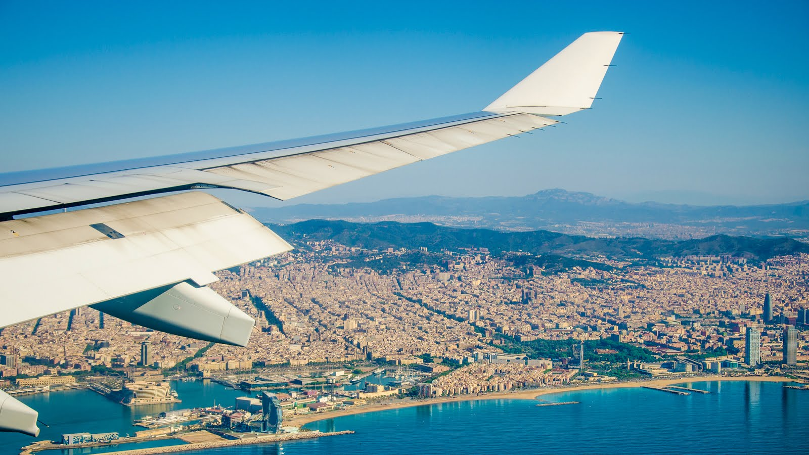

Aeropuerto de Barcelona

El Aeropuerto de Barcelona - El Prat (IATA: BCN OACI: LEBL) es el aeropuerto principal de Barcelona, situado a 14 km al suroeste del centro de la ciudadad.
El aeropuerto de Barcelona es el aeropuerto principal de Catalunya, con más 47 millones de pasajeros en 2017. El otro aeropuerto importante de Catalunya es el Aeropuerto de Girona, situado a una distancia de 92 kilómetros al noreste de Barcelona. Una de las ventajas del aeropuerto es su proximidad con la ciudad de Barcelona. Barcelona es la capital de Cataluña, una ciudad de referencia en cuanto a turismo y negocios, con numerosos congresos y ferias durante todo el año.
La Ciudad de Barcelona
Barcelona es un destino muy completo y con muchas opciones por lo que se puede visitar en diferentes tipos de viaje: desde negocios o turismo pasando por un viaje de família, de amigos o de pareja, etc.
Barcelona es un centro de negocios y de turismo muy importante tanto en Catalunya como en España en general. Tiene buenas infraestructuras para adaptarse a todo tipo de visitantes ofreciendo los mejores servicios.
Es fundamental contar con un aeropuerto adecuado para mantener el proyecto de involucrar Barcelona en el compromiso de expansión mundial. Su propia personalidad y la variedad de los mercados con los que trabaja están convirtiendo la ciudad en uno de los puntos de encuentro en todo el mundo.
Barcelona está considerada como una de las ciudades más bellas del mundo, queda demostrado con los más de 7 millones de turistas que cada año la visitan. Con estos números, también se posiciona como una de las ciudades más visitadas en todo el mundo.
Los principales atractivos de la Ciudad Condal son básicamente edificios del arquitecto Antoni Gaudí como la 'Sagrada Familia' o 'La Casa Milà', también conocida como 'La Pedrera', así como el estadio del F.C. Barcelona (Camp Nou) o museos como el de Picasso, Miró o l’MNAC. Los eventos que la ciudad organiza también atraen a miles de personas cada año, como los festivales de música o los congresos. Aqui puede comprar tickets para los eventos y sitios mas emblematicos de la ciudad.
La gastronomía y tradiciones culinarias de la tierra, el clima y su ubicación estratégica entre el Mar Mediterráneo y los Pirineos, hace que Barcelona sea una ciudad muy confortable y con un alto nivel de vida para sus habitantes y visitantes.
Como centro de negocios, Barcelona celebra muchos congresos y ferias para desarrollar la variedad de mercados de todo el mundo, específicamente en el continente europeo. Instalaciones como la 'Fira de Barcelona', construida sólo con fines culturales y de negocios están ayudando a la ciudad a hacerse posicionarse como un punto de referencia en la Europa del sur.
Seguir leyendo aqui